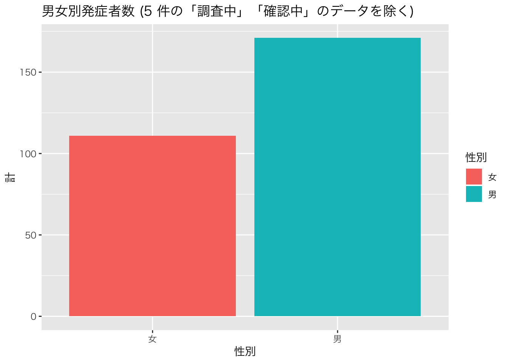
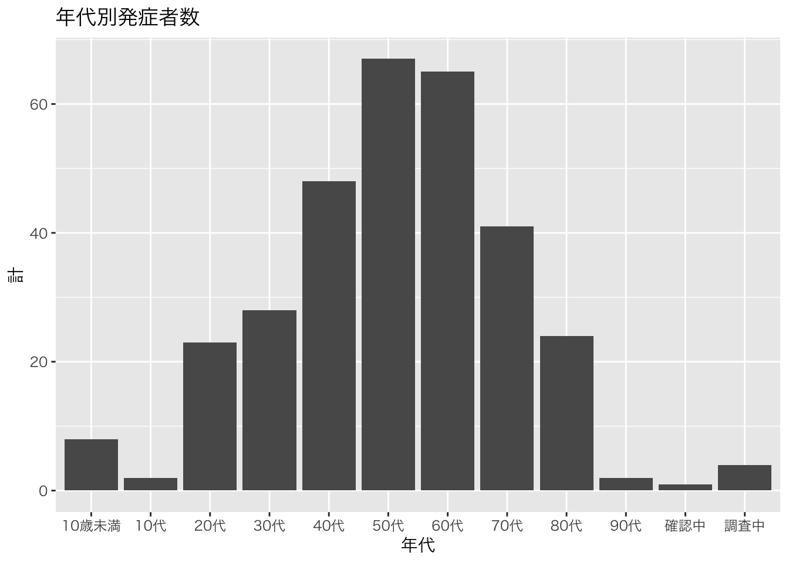
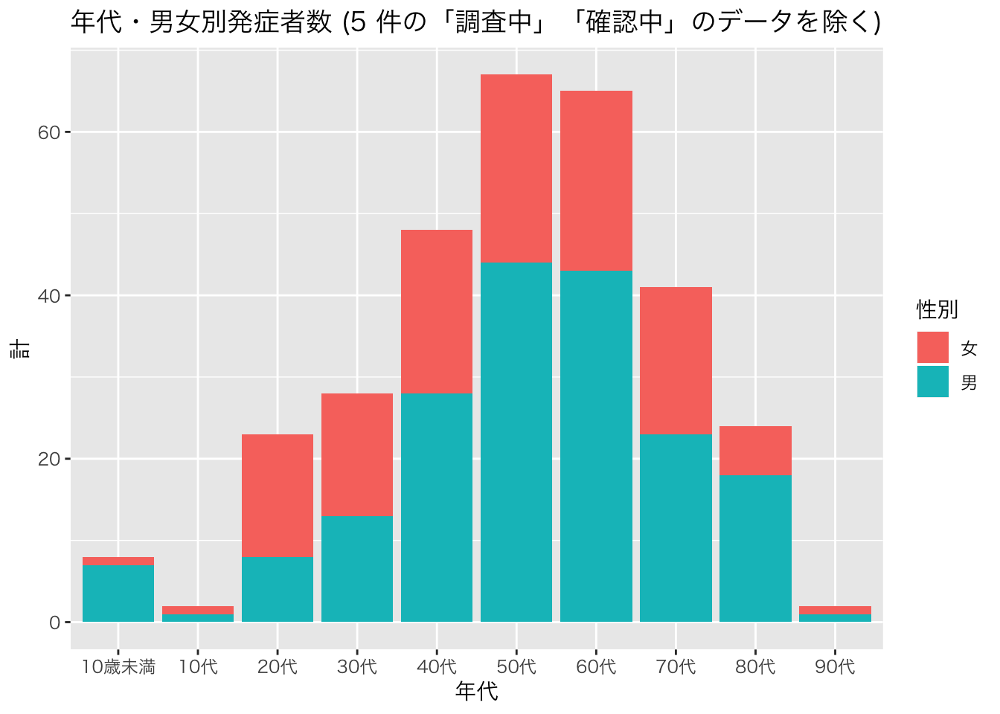
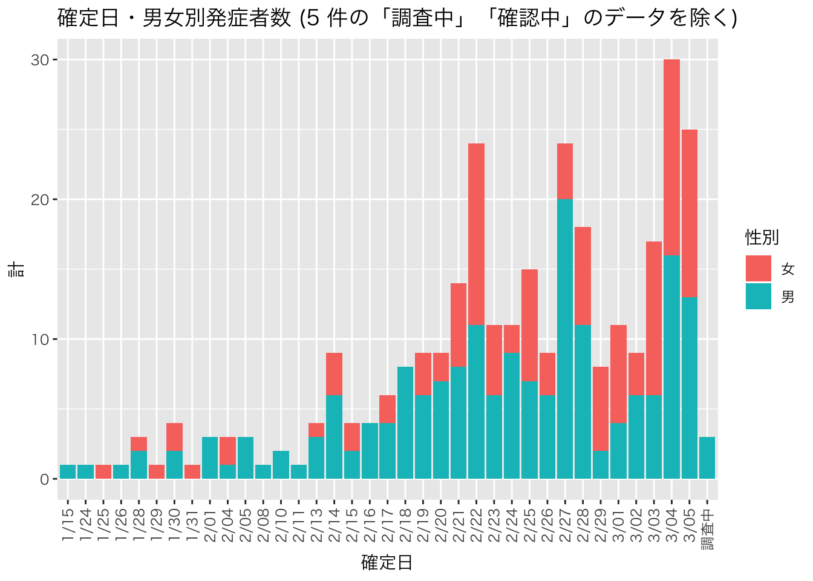
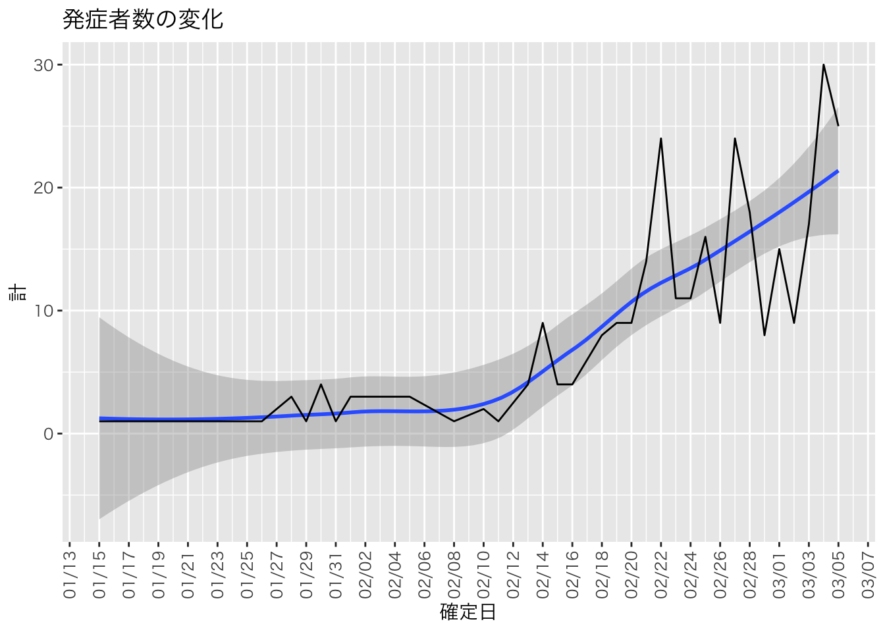
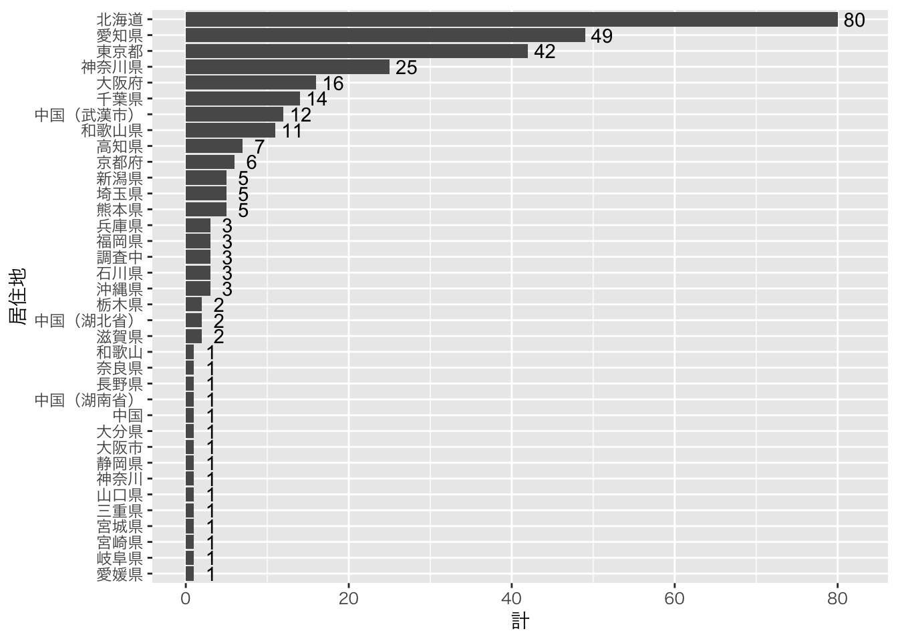

北海道：患者９例（195例目：80代女性、196例目：10歳未満男性、197例目：80代男性、198例目：60代女性、199例目：60代男性、200例目：60代男性、201例目：60代女性、202例目：40代男性、203例目：70代男性）クルーズ船乗船者における発症者は、WHO も含めて、別途記録であり、データの情報も異なるため、ここには含まれていない。参考にある、報告を参考のこと。ただし、3月に入ったことから、クルーズ船乗船者における、発症者との合計の数も、報道されるようになったことを記録しておく。
連絡先：freeopenonlinedatascience4all[at]gmail.com （[at] を @ に変換)
library(tidyverse)
library(rvest)
library(stringr)
library(lubridate)
library(scales)
url <- "https://www.mhlw.go.jp/stf/newpage_10022.html"
h <- read_html(url)
tab <- h %>% html_nodes("table")
tab_0 <- tab[[3]] %>% html_table
# str(tab)
dat_0 <- tab_0
colnames_0 <- dat_0[1,]
colnames(dat_0) <- colnames_0
# head(dat_0)
dat_0 <- dat_0[2:nrow(dat_0),]
#head(dat_0)
#dim(dat_0)
dat_0 <- dat_0[,3:6]
#head(dat_0)
tab_1 <- tab[[4]] %>% html_table
dat_1 <- tab_1
colnames_1 <- dat_1[1,]
colnames(dat_1) <- colnames_1
dat_1 <- dat_1[2:nrow(dat_1),]
# head(dat_1)
dat_1 <- dat_1[,4:7]
# dat_0
# dat_1
# dim(dat_1)
dat <- bind_rows(dat_0, dat_1) %>% arrange(確定日)
# head(dat,20)
# dim(dat)
dat$居住地 <- dat$居住地 %>% str_replace(pattern = "\r\n\t\t\t\t", replacement = "")
rownames(dat) <- 1:nrow(dat)
dat$確定日 <- as.Date(dat$確定日, "%m/%d")
dat[dat$年代 %in% c("10代未満", "305"),]dat$性別[dat$年代 == "10代未満"] <- "男"
dat$年代[dat$年代 == "10代未満"] <- "10歳未満"
dat$年代[dat$年代 == "305"] <- "30代"
dat[c(186,260),]datnodat <- dat %>% filter(性別 %in% c("調査中", "確認中")) %>% nrow
# nodat
dat0 <- dat %>% filter(性別 %in% c("女", "男")) %>%
group_by(性別) %>% summarize(計 = n()) %>% mutate(割合 = 計/sum(計))
dat0 %>% ggplot(aes(性別, 計)) + geom_col(aes(fill = 性別)) +
theme_gray(base_family = "HiraKakuPro-W3") +
labs(title = sprintf("男女別発症者数 (%s 件の「調査中」「確認中」のデータを除く)", nodat))
dat10 <- dat %>%
group_by(年代) %>% summarize(計 = n())
dat10 %>% ggplot(aes(x = 年代, y = 計)) + geom_bar(stat = "identity") +
theme_gray(base_family = "HiraKakuPro-W3") +
labs(title = "年代別発症者数")
dat1 <- dat %>% filter(性別 %in% c("女", "男")) %>%
group_by(年代, 性別) %>% summarize(計 = n())
dat1 %>% ggplot(aes(x = 年代, y = 計, fill = 性別)) + geom_bar(stat = "identity") +
theme_gray(base_family = "HiraKakuPro-W3") +
labs(title = sprintf("年代・男女別発症者数 (%s 件の「調査中」「確認中」のデータを除く)", nodat))
dat2 <- dat %>% filter(性別 %in% c("女", "男")) %>%
group_by(確定日, 性別) %>% summarize(計 = n())
dat2$確定日1 <- as.Date(dat2$確定日, "%m/%d")
dat2$確定日1 <- paste0(as.character(month(dat2$確定日1)),"/",substr(as.character(dat2$確定日1), 9,10))
dat2$確定日1[dat2$確定日1=="NA/NA"] <- "調査中"
# dat2$確定日1
dat2 %>% ggplot(aes(x = 確定日1, y = 計, fill = 性別)) + geom_bar(stat = "identity") +
theme_gray(base_family = "HiraKakuPro-W3") +
theme(axis.text.x = element_text(angle = 90, vjust = 0.5, hjust = 1)) + xlab("確定日") +
labs(title = sprintf("確定日・男女別発症者数 (%s 件の「調査中」「確認中」のデータを除く)", nodat))
dat3 <- dat %>% group_by(確定日) %>% summarize(計 = n())
dat3$確定日 <- as.Date(dat3$確定日, "%m/%d")
# dat3$確定日 <- paste0(as.character(month(dat3$確定日)),"/",substr(as.character(dat3$確定日), 9,10))
# head(dat3)
dat3 %>% ggplot(aes(x = 確定日, y = 計)) + geom_smooth() + geom_line() +
theme_gray(base_family = "HiraKakuPro-W3") +
theme(axis.text.x = element_text(angle = 90, vjust = 0.5, hjust = 1)) +
scale_x_date(breaks = "2 days", labels = date_format("%m/%d")) +
labs(title = "発症者数の変化")
geom_line に geom_smooth のグラフを加えたもの。dat4 <- dat %>% group_by(居住地) %>% summarize(計 = n()) %>% arrange(desc(計))
dat4dat4 %>% ggplot(aes(x = reorder(居住地, 計), y = 計)) + geom_col() + coord_flip() +
theme_gray(base_family = "HiraKakuPro-W3") + xlab("居住地")